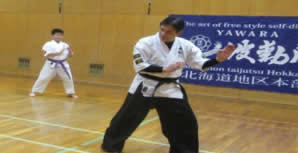
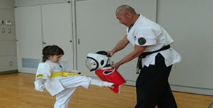
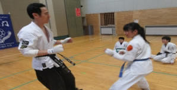
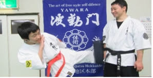
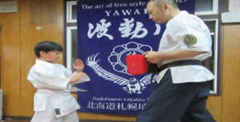
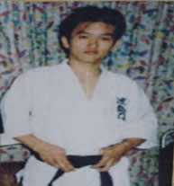

波動門北海道地区本部長 浅沼師範 波動門体術八段

- 1982年 日本拳法研修会菊水道場入門
- 1987年 波動門北海道札幌地区本部 北海道地区責任者
- 2017年 波動門北海道地区本部・本部長
各支部長

北広島支部長 松尾師範
波動門体術六段- 1983年 日本拳法研修会菊水道場入門
- 2013年 北広島支部長 北広島地区責任者

江別支部長 長岡師範
波動門体術四段- 1997年 波動門白石道場入門
- 2018年 江別支部長 江別地区責任者

札幌北支部長 小谷野師範
波動門体術四段- 2017年 札苗北スポーツクラブ入門
- 2019年 札幌北支部長 札幌北地区責任者

広木師範
波動門体術六段- 1993年 札幌白石道場入門
- 2016年 札幌南地区責任者

東北・宮城地区 佐藤支部長
波動門体術初段- 2004年 札幌白石道場入門
- 2014年 東北・宮城地区支部長 責任者